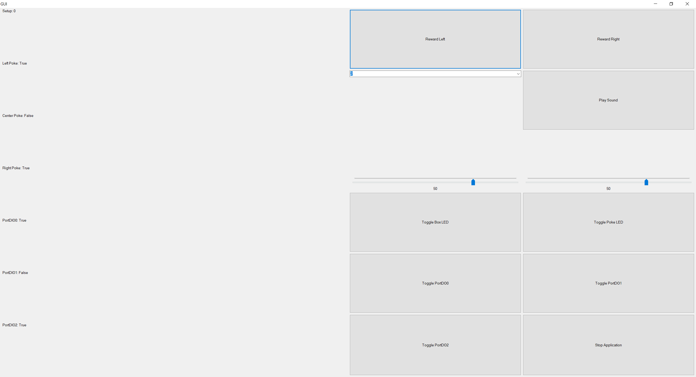
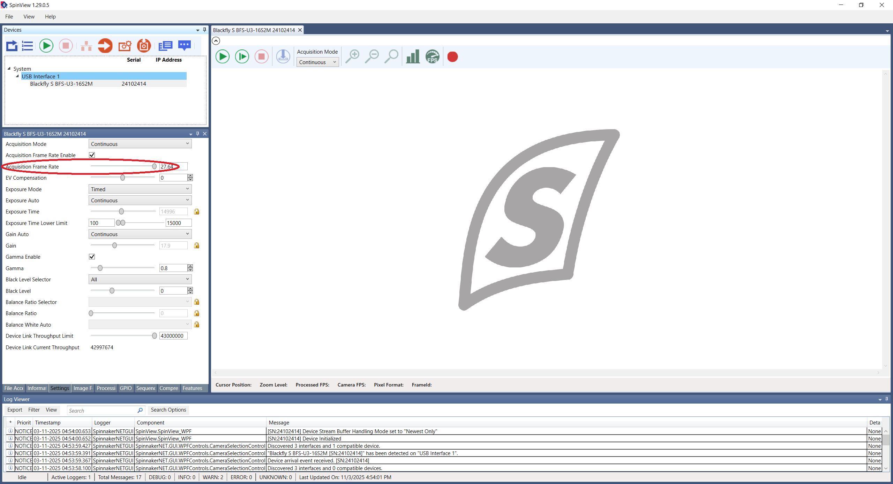
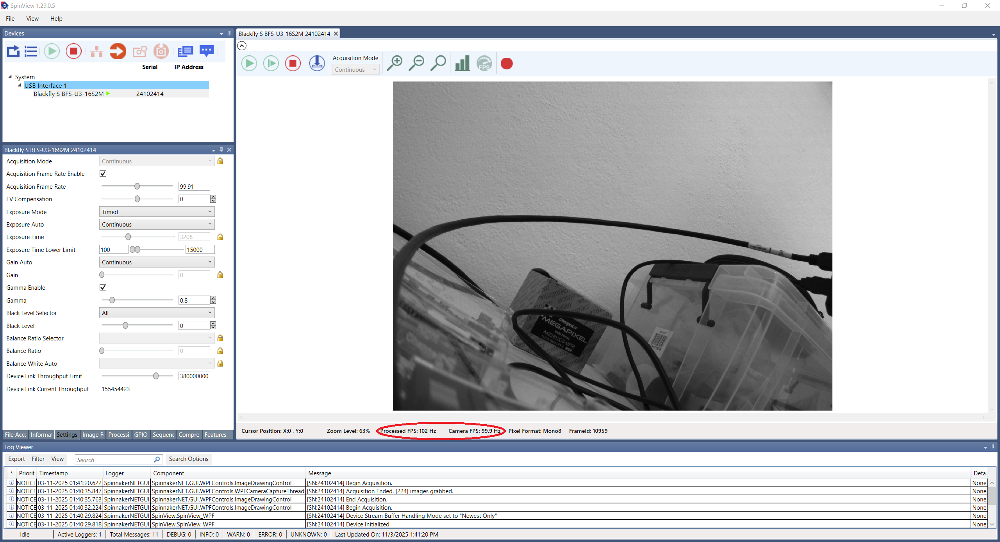

Testing the Setup
The setup is composed by a lot of hardware (3/4 Harp devices, around half a dozen Harp peripherals and a camera), so it only takes a small issue in hardware for the whole operation to go south.
With this in mind, this section aims to guide the user on going through the hardware and testing it to either ensure everything is working correctly or to rule out possible problems in case the setup is not working as expected.
Quick checks
This section serves as checklist of the most basic stuff a setup should have or should pass through before anything else:
- Verify you have all of the necessary hardware (behavior box, Harp tower, Harp SyringePumps, speakers, camera, computer). A more detailed list with the necessary materials can be found here.
- Configure the setup and the camera (read the Software Installation and the Camera Configuration sections if you need to do so).
- Calibrate the speakers.
Warning
The calibration protocol is not up to date, but it can be found here.
- Configure the task (read the Task Configuration section).
- Run and test the task without an animal to check everything is working as desired (read the Running the Task section).
Testing the Harp devices
The Harp devices are the interface between the real world and the computer (and, consequently, the task's logic), specially throught the pokes, the speakers and the reward delivery system.
In order to test each of these parts individually, a bonsai workflow named SetupTesting.bonsai was created. To open it, follow the instructions:
- Open
./bonsai/Bonsai.exe. - Click on
Open Fileand select the workflow./src/SetupTesting.bonsai. - Start the execution of the workflow. A GUI similar to the one shown in the figure below should pop-up (if it doesn't, double-click on the
GUInode).

The left side of the GUI shows the state of the digital inputs (DIs) used in the task. The first three are the DIs corresponding to the pokes, which are very straight forward. The remaining ones are a second set of DIs that are used in the task to time certain events that require timing precision (i.e. fixation time). To test these DIs in particular, click on the Toggle PortDOx buttons and check whether the state of the corresponding PortDIOx changes with it.
The right side of the GUI is more straight forward:
- The
Reward Left/Rightbuttons should deliver water, by using the same Harp SyringePump protocol used in the task. - The
PlaySoundbutton should play the sound stored in the index indicated in the combobox on the left (Note: index 31 is a silence and is used to stop a sound that is playing) and with the left and right intensities (dB SPL) that are shown in the sliders (this workflow uses the same calibration parameters that would be used in the task). - The
Toggle [something]buttons toggle a specific digital output (i.e. the box LED). - Finally, the
Stop Applicationbutton stops the execution of the workflow.
Testing the Camera
There aren't a lot of requirements for the camera recording. Besides having a clear image and the camera being capturing the region of interest (which in this case is the region containing the pokes, the speakers and the animal interacting with these), the other major requirement is that the frame rate is 100 Hz.
Warning
If the camera hasn't been configured yet, read the Camera Configuration section before proceeding.
To check if the camera is recording with the desired frame rate, open the respective camera software (SpinView for the FLIR cameras and Point Grey FlyCap2 for the Point Grey cameras) and take a look at the real frame rate values given by the camera (see the figures below).
If the real frame rate doesn't match the desired value (in this case 100 Hz), it might be due to one of two factors:
- There isn't enough light reaching the camera. Try to decrease the exposure time (read the Camera Configuration section again if you need) or try to increase the luminosity of the region of interest.
- The camera is using USB-2.0 instead of USB-3.0. This happens if the camera is connected to a USB-2.0 port of the computer. This might also happen if there's some sort of contact issue between the camera and the computer (when the camera is connected to a USB-3.0 port) - make sure the connections are solid and, as a last resource, switch the cable altogether. If this is the case, the camera's software will cap the maximum frame rate configuration value to 27.64 Hz (see figure below). 
SpinView

FlyCap2

Known Issues
This project is still being actively developed and maintained. However, since this project is composed by a lot of small parts, it's normal that some issues are discovered and, by one reason or another, can't be addressed right away. Here's a list of known issues and how to deal with them for now.
Bonsai Freeze
There's an ongoing issue where the Bonsai might freeze during a session. It's still unclear what's causing the issue, but it has the following side effects:
- Video corruption (the video from the session is basically lost)
- Possible data loss in the JSON out structure